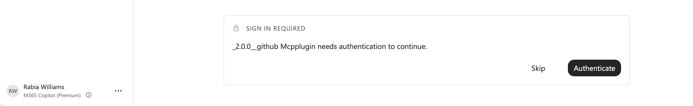
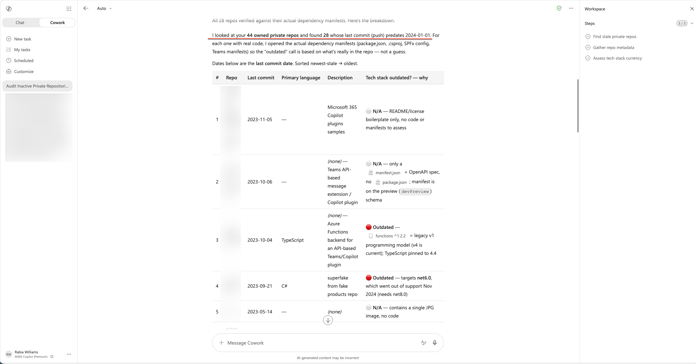

Building an Authenticated GitHub MCP Plugin for Cowork
Building an Authenticated GitHub MCP Plugin for Cowork
5 min read
This is a reference walkthrough for wiring up authenticated access in a Cowork plugin — specifically, connecting to GitHub's API as a signed-in user via OAuthPluginVault.
I wanted to use Cowork to query my private GitHub repos — things like finding stale repositories or spotting outdated tech stacks. But Cowork by default work anonymously, which means public repos only. Private data requires the plugin to authenticate as a specific user.
So I built a plugin for Cowork that does that. What follows is exactly how the OAuth wiring works, step by step. It's a narrow use case (GitHub private repos via a Cowork plugin), but the OAuthPluginVault pattern applies to any service that uses OAuth.
Quick context: what's a Cowork plugin?
Copilot Cowork can be extended with plugins - small packages that teach it new tricks. A plugin bundles two things:
- Skills - plain-language instructions that tell Cowork how to do a task ("when someone asks to find a repo, do this")
- Connectors - the wiring to an external service, so Cowork can actually go fetch real data instead of guessing
The simplest connectors need no login at all - point at a public endpoint and you're done. Fine for public docs. Not fine for a question about my private repos.
The first attempt: browser sign-in works, but I wanted more control
When I asked about private repos, Cowork checked for an existing GitHub session, didn't find one, and prompted me to sign in via the browser. Once I did — it worked.
So why not stop there? Because that sign-in is tied to the browser session. I wanted OAuthPluginVault wiring instead: credentials stored in the Teams developer portal, a proper token exchange per user, and a clear record of what scopes were granted.
That meant the plugin needed its own OAuth registration.
What it took to get authentication working
Three moves from anonymous to authenticated. I put the finished plugin here if you want to see the real files: cowork-github-plugin. Below is exactly what I did.
Step 1: Register an OAuth App with GitHub
This is GitHub saying "yes, I'll vouch for whoever signs in through this app, and I'll tell you who they are."
- Go to github.com/settings/developers and select OAuth Apps → New OAuth App.
- Fill in the basics:
- Application name - anything recognizable, e.g.
GitHub for Cowork - Homepage URL - any valid URL, I used my plugin's repo
- Authorization callback URL - this one matters, and it's always the same value no matter what you're building:
This is the address Microsoft's side hands the login back to once GitHub says "yep, that's them." Get this wrong and sign-in just quietly fails.
https://teams.microsoft.com/api/platform/v1.0/oAuthRedirect - Select Register application.
- On the app's page, select Generate a new client secret. Copy both the Client ID and the Client secret somewhere safe right now - GitHub only shows you the secret once.
That's the whole GitHub side. Two values in hand: a client ID and a client secret.
Step 2: Set up the OAuth registration in Teams developer portal
Now I needed somewhere for those two values to live that wasn't "hardcoded in my plugin files." That's what the Teams developer portal's OAuth client registration does - it stores the credentials securely and hands your plugin back a reference ID to point at instead.
- Open the Teams developer portal and go to Tools → OAuth client registration.
- Select Register client (or New OAuth client registration if you've got others already).
- Fill in the form:
- Registration name - something you'll recognize later, e.g.
github-mcp-oauth - Base URL -
https://api.githubcopilot.com, the GitHub MCP server's address - Restrict usage by org -
My organization onlywhile you're testing, orAny Microsoft 365 organizationif this needs to work beyond your own tenant - Restrict usage by app -
Any Teams appfor now, you can lock it down later once your plugin has a stable ID - Client ID - paste the one GitHub gave you
- Client secret - paste the one GitHub gave you
- Authorization endpoint -
https://github.com/login/oauth/authorize - Token endpoint -
https://github.com/login/oauth/access_token - Scope -
repo read:user(more on whyrepospecifically, below) - Enable PKCE - optional, turn it on if you want the extra layer
- Select Save.
- You'll get back an auth config ID - the portal currently labels it OAuth client registration ID. Copy it.
Step 3: Point the plugin at it
That ID from Step 2 goes straight into the connector definition in manifest.json as in the sample I shared:
"authorization": {
"type": "OAuthPluginVault",
"referenceId": "PasteyourOAuthVaultReferenceIdHere"
}
That's it. For anonymous this type is None but now for authenticated it is OAuthPluginVault.
Paste your real reference ID where you see PasteyourOAuthVaultReferenceIdHere , and now every user who installs this plugin gets prompted to sign in with their own GitHub account before Cowork can use it on their behalf. Nowhere in that file is there a client secret sitting in plain text - just a pointer to where the real credential lives.
You can see the exact shape of this in my manifest.json - same connector block, just swap in your own reference ID.
Upload the plugin to Cowork
Once the plugin is packaged and zipped, getting it into Cowork took about thirty seconds:
- Open Cowork and select the + icon.
- Scroll down to Customize (manage skills and plugins).
- On the Customize page, upload the plugin zip file.
That's it - no "connect" step needed. Once uploaded, Cowork picks it up and you're ready to test.
The first time you prompt Cowork to use the plugin, it'll show a Sign in required card asking you to authenticate. Hit Authenticate, sign in with GitHub, and you're in - Cowork won't ask again after that.

Testing it
With the plugin uploaded and authenticated, I asked:
"Find my private repos that haven't had a commit since before 2024-01-01. For each one, make a table with: repo name, last updated date, primary language, and one-line description. Then add a column flagging whether the tech stack looks outdated (e.g., unmaintained framework, EOL language version, dependency now widely deprecated) — and briefly say why."

It returned a table of private repos with last-updated dates and language info. The "outdated tech" flagging is only as good as the model's knowledge — it's pattern-matching on framework names, not actually checking dependency trees — but for a quick triage of what to look at first, it was useful enough.
The costs worth knowing
Remember that repo scope I set in the Teams developer portal back in Step 2? It's blunt on purpose — it's the only way a classic GitHub OAuth App can see private repos at all. There's no "read-only" version. Granting it technically hands the plugin write access too — push, delete, the works — even though all we asked it to do was search.
This is a real tradeoff, not a footnote. For a personal experiment it's acceptable; for anything shared or production-facing, you'd want to explore GitHub Apps (which offer fine-grained permissions) instead of classic OAuth Apps. That's a meaningfully different integration path.
Why this walkthrough exists
The OAuthPluginVault wiring isn't complicated once you've done it, but the documentation is scattered across. This post puts the three pieces in one place. The GitHub-specific use case is just a concrete example — the pattern (register OAuth app → store credentials in Teams portal → reference the ID in your connector) is the same for any OAuth-based service.
If you want to do the same
The steps again, stripped down:
- Register an OAuth app with whatever service you're connecting to
- Register those credentials in the Teams developer portal and grab the reference ID
- Flip the authorization type in your connector config from
NonetoOAuthPluginVault - Test with a query that requires authenticated access
Grab the full working plugin and swap in your own reference ID: github.com/rabwill/cowork-github-plugin